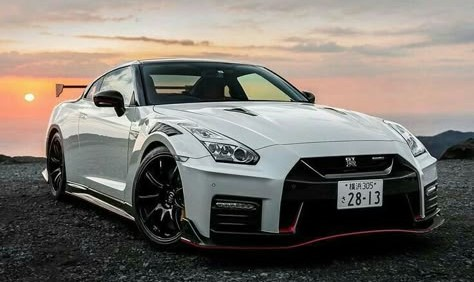

¿ACASO CONOCES ESTE SUPER AUTO?
DEJAME TE CUENTO UN POCO
El Nissan GT-R R35 es un ícono del automovilismo japonés desde su lanzamiento en 2007. Apodado "Godzilla" por su brutal desempeño, cuenta con un motor V6 biturbo de 3.8 litros, capaz de generar más de 600 HP en sus versiones más potentes. Gracias a su tracción integral y transmisión de doble embrague, acelera de 0 a 100 km/h en menos de 3 segundos. A diferencia de otros superdeportivos, combina alto rendimiento con usabilidad diaria. Un dato curioso es que su sistema de lanzamiento era tan agresivo en las primeras versiones que podía dañar la transmisión si se usaba de manera incorrecta.
.jpeg)
El Nissan GT-R R35 es una máquina diseñada para el rendimiento y la aerodinámica. Su carrocería, hecha de aluminio y fibra de carbono, lo hace ligero pero resistente. Cada línea de su diseño no solo aporta agresividad, sino que también mejora el flujo de aire para maximizar la estabilidad a altas velocidades. Su parrilla frontal no solo le da una apariencia imponente, sino que también optimiza la refrigeración de su poderoso motor V6 biturbo. En la parte trasera, sus icónicas luces redondas rinden homenaje a sus predecesores, manteniendo la esencia del legendario GT-R. Un verdadero depredador en la pista y en la calle.